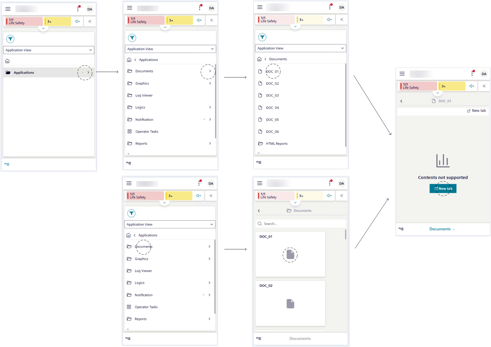

Use Document Viewer in Mobile Flex
This section provides instructions to work with documents or web pages in the mobile Flex web app. For background information, see the Documents reference section.

Locate the Documents Folder
- Tap > System.
- List view displays on the screen.
- Tap .
- System Browser displays on the screen.
- Choose Application View.
- The Applications folder displays on the screen.
- Tap next to the Applications folder.
- The Applications tree displays expanded and shows the Documents folder among other folders.
Display Documents in Tile View
- The Documents folder is available on your device screen.
- Do one of the following:
- To display all the available documents as tile icons, tap Documents.
- To display only the documents of a specific subfolder as tile icons, tap Documents > […].
- The Documents screen displays document objects vertically tiled according to your selection.
Search or Filter Documents
- The Documents screen displays on your device.
- In the Search box, enter the desired text.
- The items in the Documents screen are filtered as you enter the text.
View a Document
- The Documents folder or any subfolders is available on your device screen.
- Select the document you want to open, in one of the following ways:
- Tap next to the Documents folder or any subfolder, and then, under this folder, tap the item that corresponds to the desired document.
- Tap the Documents folder or any subfolder, and then tap the tile icon that corresponds to the desired document.
- If you selected a document object corresponding to a TXT/JPG file or a to a whitelisted website (included in the list of allowed websites), the relevant file or website opens in the Documents screen.
- If you selected a PDF document or a website that is not in the list of allowed websites, the Documents screen tells you to open it in a new tab.
- Tap New tab.
- (Optional) If you wish to open the same TXT/JPG file or whitelisted website in another browser tab:
- In the Documents screen, tap New tab.
View a Related-item Document
- Tap a system object that has one or multiple documents related to that object.
- Tap , locate the Documents section among the different related items, and then open it.
- Tap the document-related item you want to open.
- If you selected a related item corresponding to a TXT/JPG file or a to a whitelisted website, the relevant file or web page opens in the Documents screen.
- If you selected a related item corresponding to a PDF document or web page that was not whitelisted, this web page opens in another browser tab.
- (Optional) If you wish to open the same related-item TXT/JPG file or whitelisted website document in a separate page:
- Next to the related item, tap and then New tab.